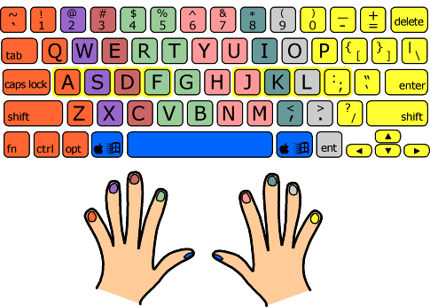

It all started out with me trying to learn Vim
I came across the term “touch typing” when I was looking in a book about Vim (the text editor). The book is called Practical Vim: Edit Text at the Speed of Thought, by Drew Neil. In there I read the following in the foreword:
Learn to Touch Type, Then Learn Vim
If you have to look down to find the keys on the keyboard, the benefits of learning Vim won’t come fast. Learning to touch type is imperative. Vim traces its ancestry back to the classic Unix editors[…]. These predate the mouse and all of the point-and-click interfaces that came with it. In Vim, everything can be done with the keyboard. For the touch typist, that means Vim does everything faster.
I have always been amazed at my friends who can type on a keyboard without looking at the keys.
So I decided it was time to do something about it. I’ve been using a keyboard since I was very young and consider myself an average typer (~60 wpm), but then I have to actually look at the keys to figure out where my fingers are and where to move them next, just to orient myself. A quick search led me to a website called keybr.com where you can learn this very useful skill!
The idea is simple: each finger has an assigned key (see image below), and each key is only ever touched by that finger.

Also, have you ever noticed those little bumps on your middle keys (“F” and “J” if using a QWERTY-keyboard)? That is where your index fingers should “rest” when they are not typing. This is so that you can know where your fingers are, without ever having to look down! These keys: “ASDF” and “JKL;” (English layout) are known as “home row”, which is where your fingers should be as a starting point.
Here is a link to my keybr-profile where you can follow my progress.